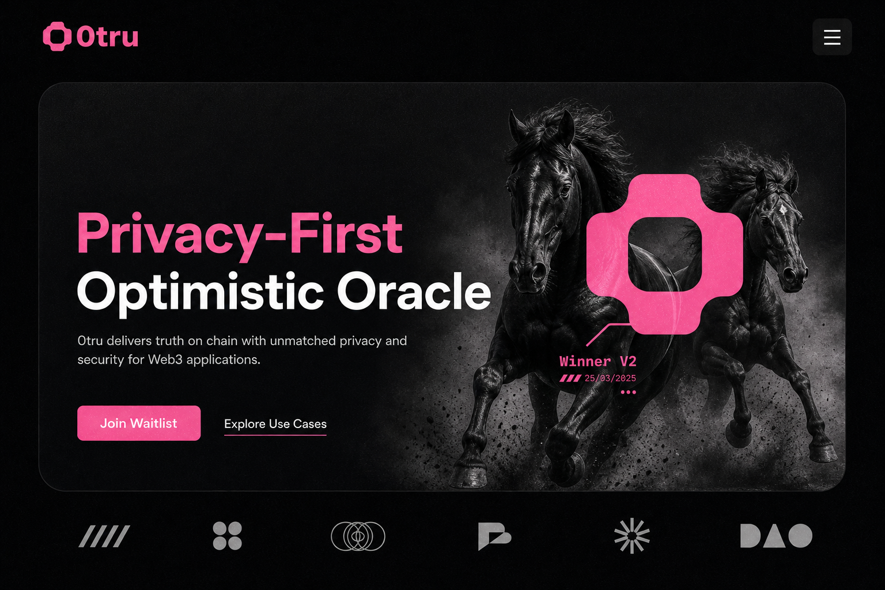

Outcome entered
A proposed truth is posted for the market. If it is correct, the market settles quickly.

Cinematic story
Entering the truth
0tru uses optimistic settlement for normal markets and a private voting escalation when the proposed outcome is challenged. The market learns the truth, while voters keep their choices and payouts hidden.
A proposed truth is posted for the market. If it is correct, the market settles quickly.
If the outcome is false, anyone can challenge it and force the protocol into verification.
Voters submit private commitments. Attackers cannot confirm who accepted a bribe or how they voted.
The final outcome is public. The voter trail and reward trail remain private.
Brand system